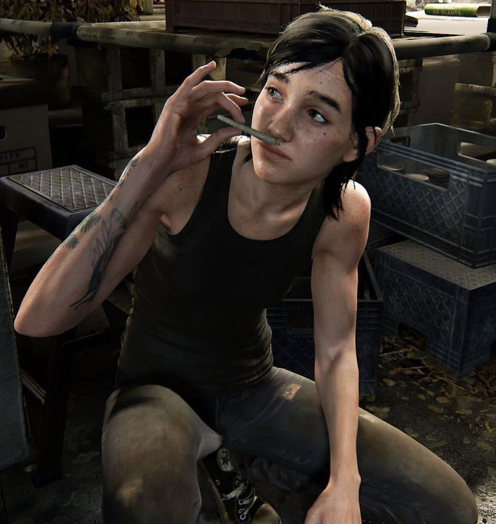

The Last of Us
My Favorite Video Game
The Last of Us is my favorite game series of all time.
Nothing else comes close. The first game was released in 2013
and remastered in 2014. The Last of Us Part II was released in
2020, and the first game was remade as The Last of Us Part I in
2022. I spent about half a month playing the whole story from
Part I to Part II. I really love the art style and the writing
of the story. This series showed me how much care and hard work
it takes to create a great game.

Why I Like This Game
- The art style is very realistic.
- The characters are well developed.
- I like the themes explored in the story.
Click to see more
Overall, this game is very immersive. Naughty Dog made
the world and the characters look very realistic, almost
like real people and places. Every character feels alive
and has their own personality. Because of this, I feel
completely involved in the story when I play the game.
My Favorite Characters
-
Ellie

I like Ellie because of her loyalty to Joel.
In Part II, even though they still had many
problems that they did not solve, she traveled
far from home to find the person who killed him.
She is also very strong and brave. Sometimes,
it feels like she can fight a whole army by herself.
-
Joel

The first thing I like about Joel is his toughness
and determination. I do not think it is bad for a
story to have a main character with a lone-wolf
personality. Joel is definitely not a hero, but I
like how far he is willing to go to protect his
family. He is also brave, calm, and strong.
I like how the story uses revenge and redemption between
a small group of people to talk about the apocalypse and
human nature. I also like how Part II tells its story from
two different points of view. It helped me understand both
sides of the story and made the experience more powerful.
It also made me think about revenge, forgiveness, and human
nature. That is why I love this series so much.
More About the Game:
You can learn more about The Last of Us on the
official Naughty Dog website
.